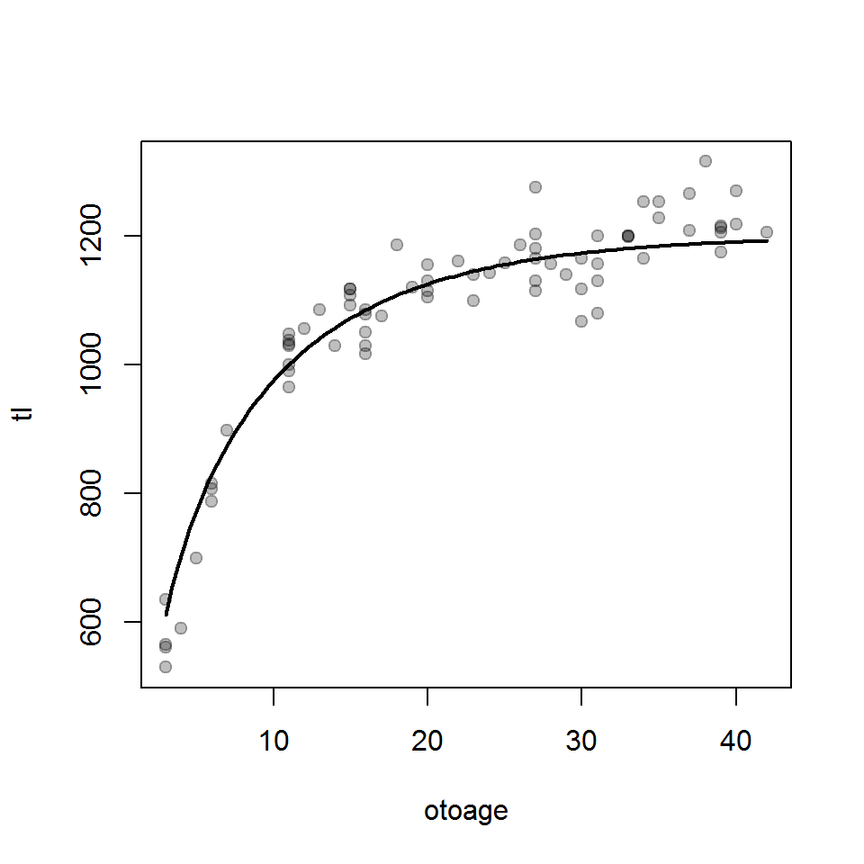
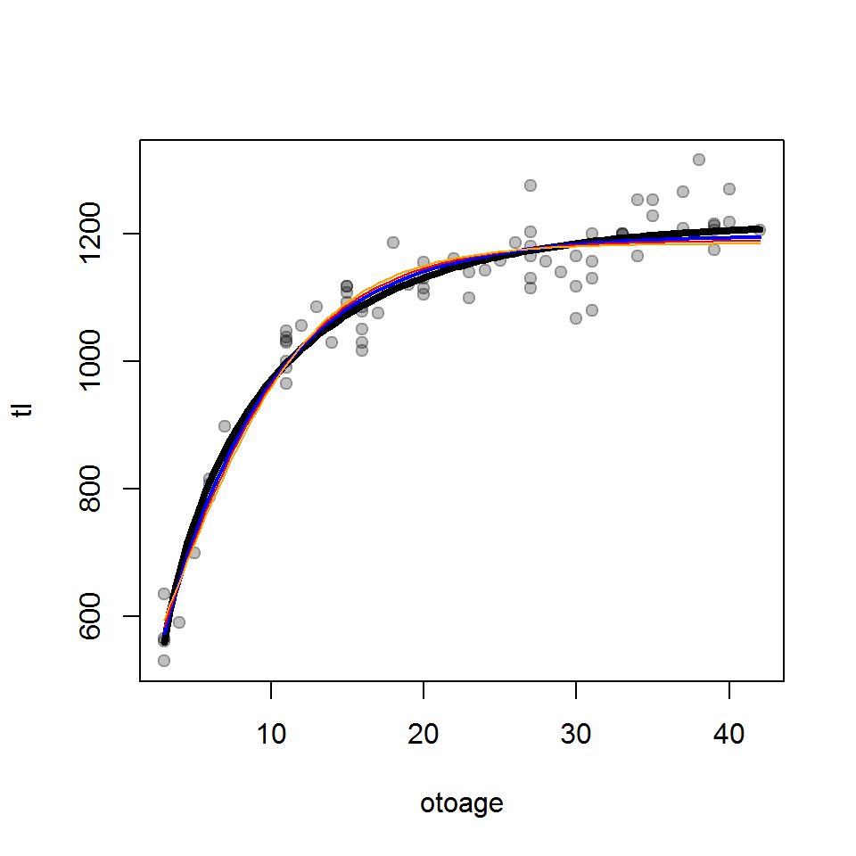

Functions used in this supplement require the packages shown below.
> library(FSA)
> library(magrittr)
> library(dplyr)
> library(nlstools)
> library(AICcmodavg)
> library(minpack.lm)The male Black Drum data used in the book will also be used here.
> bdmf <- read.csv("BlackDrum2001.csv") %>%
select(-c(spname,day,weight)) %>%
filterD(sex %in% c("male","female"),otoage<50)Loading required namespace: gdata> bdm <- filterD(bdmf,sex=="male")
> headtail(bdm) year agid month tl sex otoage
1 2001 1 4 787.5 male 6
2 2001 2 5 700.0 male 5
3 2001 8 5 1140.0 male 23
72 2001 122 5 1175.0 male 39
73 2001 125 6 590.0 male 4
74 2001 127 6 530.0 male 3Fitting the most common “Typical” parameterization of the von Bertalanffy growth function (VBGF) was demonstrated in the main chapter. However, the VBGF has been expressed in a variety of parameterizations. The most common alternative parameterizations of the VBGF may be seen with vbModels() from FSA.
Different parameterizations do not fit the data differently (i.e., the same number of parameters are used, predictions will be identical, and fitted model plots will look the same). However, different parameterizations may be used if the fisheries scientist is interesting in estimating different parameters. For example, one might use the “Original” (von Bertalanffy (1938)) or “Mooij” (Mooij et al. (1999)) parameterizations if interests is in \(L_{0}\) the mean length at time 0 (i.e., at “hatch”). Two of the parameterizations, “Schnute” (Schnute (1981)) and “Francis” (Francis (1988)) are either largely or whole based on expected values. The parameters in expected value parameterizations are generally less correlated and, thus, the problems related to correlated parameters discussed in the main chapter may be ameliorated with these parameterizations. These two parameterizations are, however, slightly more work to fit because the scientists must choose two ages that will define two of the model parameters. Fitting the “Francis” parameterization of the VBGF to the Black Drum data will be demonstrated below.
An R function for predicting length from a given age may be created by the user. However, similar to what was demonstrated in the main chapter for the “Typical” VBGF, vbFuns() from FSA may be used to create such a function for each parameterization displayed in vbModels(). A brief explanation of the parameters is given if msg=TRUE is included in vbFuns(). A function for the “Francis” parameterization is defined with vbFuns() below. Note that values for the three parameters may be included as a vector in L1= and that the youngest and oldest ages may be included as a vector in t1=.
> ( vbF <- vbFuns("Francis") )function(t,L1,L2=NULL,L3=NULL,t1,t3=NULL) {
if (length(L1)==3) { L2 <- L1[[2]]; L3 <- L1[[3]]; L1 <- L1[[1]] }
if (length(t1)==2) { t3 <- t1[[2]]; t1 <- t1[[1]] }
r <- (L3-L2)/(L2-L1)
L1+(L3-L1)*((1-r^(2*((t-t1)/(t3-t1))))/(1-r^2))
}
<environment: 0x0a5eba94>The three parameters in the “Francis” parameterizations are the expected (i.e., mean) lengths at three ages. Two of the ages are generally the youngest and oldest (or very close to those) ages in the data. The third age is, by definitition, halfway between these two ages. Thus, the parameters will be the expected lengths at a young, old, and intermediate age. In this example, I have chosen to estimate expected lengths for the youngest and oldest ages in the data.
> ( ages <- range(bdm$otoage) )[1] 3 42Starting values are obtained with vbStarts() as described in the main chapter. However, with the “Francis” parameterization, the ages that define the youngest and oldest age must also be provided in ages2use=.
> ( svF <- vbStarts(tl~otoage,data=bdm,type="Francis",ages2use=ages) )$L1
[1] 572.775
$L2
[1] 1139.625
$L3
[1] 1205The model is fit and parameter estimates with likelihood profile are obtained as described in the book, with the exception that the vector that defines the youngest and oldest ages must be supplied when vbF() is used. Bootstrapped confidence intervals and predictions may also be obtained as described in the book.
> nlsF <- nls(tl~vbF(otoage,L1,L2,L3,t1=ages),data=bdm,start=svF)
> cbind(Ests=coef(nlsF),confint(nlsF))Waiting for profiling to be done... Ests 2.5% 97.5%
L1 572.975 533.2025 612.3236
L2 1157.463 1145.6535 1169.2496
L3 1194.248 1176.6756 1212.7376> bootF <- nlsBoot(nlsF)
> cbind(Ests=coef(nlsF),confint(bootF)) Ests 95% LCI 95% UCI
L1 572.975 536.8158 610.6547
L2 1157.463 1146.0757 1168.0821
L3 1194.248 1178.7002 1212.1070> predict(bootF,vbF,t=3,t1=ages)prediction 95% LCI 95% UCI
572.4929 536.8158 610.6547 Note that the intra-parameter correlations are relatively low for this parameterization. Additionally, the scale of the parameters in the “Francis” parameterization are usually similar. Both of these characteristics may aid model convergence.
> summary(nlsF,correlation=TRUE)
Formula: tl ~ vbF(otoage, L1, L2, L3, t1 = ages)
Parameters:
Estimate Std. Error t value Pr(>|t|)
L1 572.975 19.424 29.5 <2e-16
L2 1157.463 5.910 195.9 <2e-16
L3 1194.248 8.717 137.0 <2e-16
Residual standard error: 45.6 on 71 degrees of freedom
Correlation of Parameter Estimates:
L1 L2
L2 -0.16
L3 0.17 0.65
Number of iterations to convergence: 5
Achieved convergence tolerance: 3.023e-06Mean length-at-age has been modeled by functions other than the VBGF. Common other functions are the exponential, logistic, and polynomial (Ricker (1975)), as well as the specific functions of Gompertz (1825), Richards (1959), Schnute (1981), and Schnute and Richards (1990). The “Schnute” model and several parameterizations of the logistic, Gompertz, and Richards models have been coded in convenience functions in FSA. For example, the default parameterizations of the logistic, Gompertz, and Richards models are defined below. Again, include msg=TRUE for definitions of the parameters. Further note that the Richards model has four parameters.
> l1 <- logisticFuns()
> g1 <- GompertzFuns()
> r1 <- RichardsFuns()Unfortunately, convenience functions for finding starting values for each of these functions do not exist. Starting values can be obtained by iteratively superimposing a curve of the function at chosen values for the parameters onto a scatterplot of the raw data. This is demonstrated below for the Richards function. [Note that this may take considerable trial-and-error to find parameter values that provide a curve in the “neighborhood” of the data. Starting values likely only need to provide a rough fit to the data. However, I had considerable difficult finding starting values that would work with the Richards function for these data.]
> plot(tl~otoage,data=bdm,pch=19,col=rgb(0,0,0,1/4))
> svR1 <- list(Linf=1200,k=0.1,a=1.1,b=0.4)
> curve(r1(x,unlist(svR1)),from=3,to=42,add=TRUE,lwd=2)
A similar process (not shown) was followed for the logistic and Gompertz models.
> svG1 <- list(Linf=1250,gi=0.15,ti=2)
> svL1 <- list(Linf=1250,gninf=0.15,ti=4)These models can be fit and summarized as illustrated above and in the book.
> nlsR1 <- nls(tl~r1(otoage,Linf,k,a,b),data=bdm,start=svR1)
> bootR1 <- nlsBoot(nlsR1)Warning in nlsBoot(nlsR1): The fit did not converge 99 times
during bootstrapping> cbind(Ests=coef(nlsR1),confint(bootR1)) Ests 95% LCI 95% UCI
Linf 1.216988e+03 1.188552e+03 1248.8911551
k 9.419418e-02 6.607613e-02 0.1469104
a 1.155605e+00 6.871519e-01 1.2211790
b 3.793338e-01 2.755152e-01 1.1601620> predict(bootR1,r1,t=3)prediction 95% LCI 95% UCI
560.3240 521.6165 599.8454 Information criterion can be used to identify which of these models best fits the male Black Drum data. First, the Gompertz and logistic functions are fit to the data.
> nlsG1 <- nls(tl~g1(otoage,Linf,gi,ti),data=bdm,start=svG1)
> nlsL1 <- nls(tl~l1(otoage,Linf,gninf,ti),data=bdm,start=svL1)These objects are then submitted to AICctab to provide a summary table. From this, the Richards models is most supported followed by the VBGF. The logistic and Gompertz models had little support, likely because they force an inflection point in the model which is not apparent in the data.
> aictab(list(nlsF,nlsL1,nlsG1,nlsR1),c("VBGF","logistic","Gompertz","Richards"))
Model selection based on AICc :
K AICc Delta_AICc AICcWt Cum.Wt LL
Richards 5 779.60 0.00 0.63 0.63 -384.36
VBGF 4 780.85 1.25 0.34 0.96 -386.14
Gompertz 4 785.34 5.74 0.04 1.00 -388.38
logistic 4 790.33 10.73 0.00 1.00 -390.88A plot of the best-fit model for each growth functions shows, however, that there is likely very little difference in predicted values among the four models.
> plot(tl~otoage,data=bdm,pch=19,col=rgb(0,0,0,1/4))
> curve(r1(x,coef(nlsR1)),from=3,to=42,add=TRUE,lwd=4)
> curve(vbF(x,coef(nlsF),t1=ages),from=3,to=42,add=TRUE,lwd=2,
col="blue")
> curve(g1(x,coef(nlsG1)),from=3,to=42,add=TRUE,col="red")
> curve(l1(x,coef(nlsL1)),from=3,to=42,add=TRUE,col="orange")
The nls() function uses the Gauss-Newton algorithm by default. However, there are many other algorithms for fitting nonlinear functions. Several of these algorithms are coded in R. Two of these algorithms are highlighted here.
The Levenberg-Marquardt (L-M) is a powerful and common algorithm that is implemented in nlsLM() from minpack.lm. The L-M algorithm is a hybrid that switches between two other algorithms depending on when those algorithms perform optimally. Most practically, the L-M algorithm appears to be quite robust to “poor” starting values The main arguments to nlsLM() are the same as those to nls(). For example, the Richards model is fit to the Black Drum data below using the L-M algorithm.
> lmR1 <- nlsLM(tl~r1(otoage,Linf,k,a,b),data=bdm,start=svR1)
> bootlmR1 <- nlsBoot(lmR1)
> cbind(Ests=coef(lmR1),confint(bootlmR1)) Ests 95% LCI 95% UCI
Linf 1.216987e+03 1.191151e+03 1264.5659363
k 9.419671e-02 5.398911e-02 0.1476226
a 1.155596e+00 6.800272e-01 1.2220145
b 3.793506e-01 2.377583e-01 1.2988192> predict(bootlmR1,r1,t=3)prediction 95% LCI 95% UCI
559.8447 515.9111 601.7432 One may also put constraints on the parameters when using nlsLM(). The lower and upper bounds are entered into separate named vectors with the same structure as the list used for starting values. These lists are then provided to lower=} andupper=}, respectively. Infinite bounds are the default but may be specifically defined for some parameters with Inf} and-Inf} (where `Inf} represents infinity). For example, \(L_\infty\), \(k\), \(a\), and \(b\) are constrained to be positive values in the model fitting below. In this instance, these bound had no noticeable effect until bootstapping (fewer lack of convergences). In other instances, the constraints may substantively impact the parameter estimates. Bounds should be set as widely (as conservatively) as possible.
> lmR1b <- nlsLM(tl~r1(otoage,Linf,k,a,b),data=bdm,start=svR1,
lower=c(Linf=1,K=0.0001,a=0.0001,b=0.0001),
upper=c(Linf=Inf,K=Inf,a=Inf,b=Inf))
> bootlmR1b <- nlsBoot(lmR1b)
> cbind(Ests=coef(lmR1b),confint(bootlmR1b)) Ests 95% LCI 95% UCI
Linf 1.216987e+03 1189.1792462 1263.1975748
k 9.419671e-02 0.0532662 0.1458469
a 1.155596e+00 0.7047226 1.2168230
b 3.793506e-01 0.2335897 1.2349995Parameter constrains may also be used with nls() but the optimization algorithm must be changed to “Port” with algorithm="port". With this argument the constraints are added as shown above for nlsLM().
> nlsR1c <- nls(tl~r1(otoage,Linf,k,a,b),data=bdm,start=svR1,
algorithm="port",
lower=c(Linf=1,K=0.0001,a=0.0001,b=0.0001),
upper=c(Linf=Inf,K=Inf,a=Inf,b=Inf))
> bootnlsR1c <- nlsBoot(nlsR1c)
> cbind(Ests=coef(nlsR1c),confint(bootnlsR1c)) Ests 95% LCI 95% UCI
Linf 1.216988e+03 1.189351e+03 1266.2577571
k 9.419474e-02 5.350288e-02 0.1454362
a 1.155603e+00 7.163542e-01 1.2297301
b 3.793374e-01 2.435951e-01 1.1309667Still other algorithms are found in nlxb() from nlmrt and nls2() from nls2.
Francis, R. I. C. C. 1988. Are growth parameters estimated from tagging and age-length data comparable? Canadian Journal of Fisheries and Aquatic Sciences 45:936–942.
Gompertz, B. 1825. On the nature of the function expressive of the law of human mortality and on a new mode of determining the value of life contingencies. Philosophical Transactions of the Royal Society of London 115:515–585.
Mooij, W. M., J. M. V. Rooij, and S. Wijnhoven. 1999. Analysis and comparison of fish growth from small samples of length-at-age data: Detection of sexual dimorphism in Eurasian Perch as an example. Transactions of the American Fisheries Society 128:483–490.
Richards, F. J. 1959. A flexible growth function for empirical use. Journal of Experimental Botany 10:290–300.
Ricker, W. E. 1975. Computation and interpretation of biological statistics of fish populations. Bulletin of the Fisheries Research Board of Canada.
Schnute, J. T. 1981. A versatile growth model with statistically stable parameters. Canadian Journal of Fisheries and Aquatic Sciences 38:1128–1140.
Schnute, J. T., and L. J. Richards. 1990. A unified approach to the analysis of fish growth, maturity, and survivorship data. Canadian Journal of Fisheries and Aquatic Sciences 47:24–40.
von Bertalanffy, L. 1938. A quantitative theory of organic growth (inquiries on growth laws II). Human Biology 10:181–213.